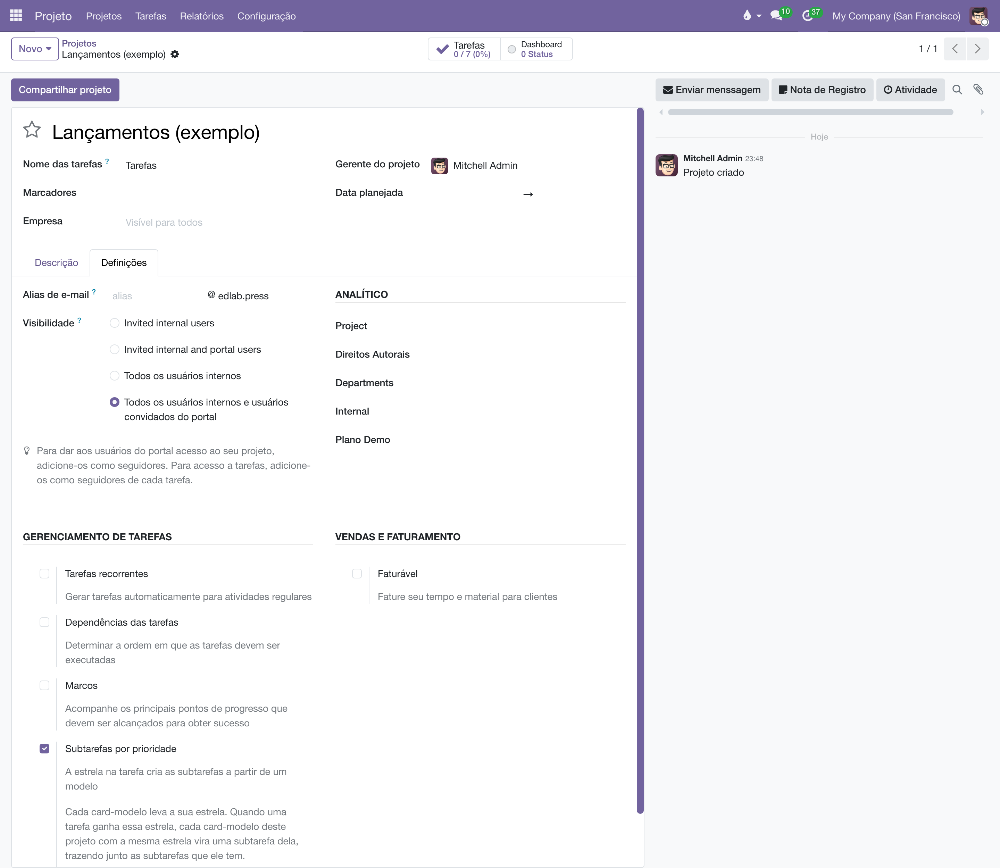
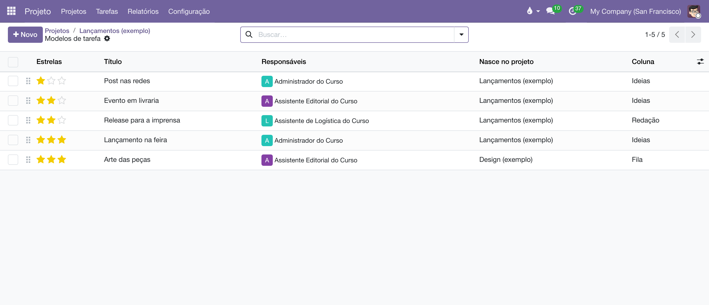
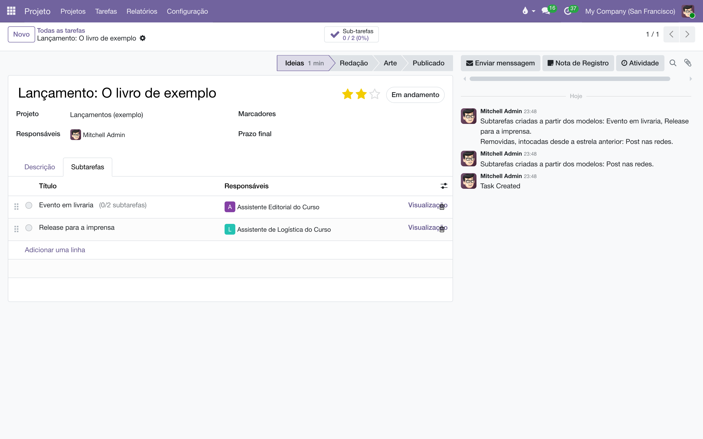

Subtarefas pela estrela
Marcar a estrela num card monta a pauta dele: cada card-modelo do projeto com a mesma estrela vira uma subtarefa, já com responsável e coluna. Trocar a estrela troca a pauta, sem apagar o trabalho feito.
Visão geral
Um lançamento pequeno pede um post nas redes; um lançamento médio pede evento em livraria e release para a imprensa; um grande pede tudo isso e a feira. Em vez de lembrar a lista toda vez, o projeto guarda os cards-modelo, cada um marcado com a estrela da campanha a que pertence. A estrela que se dá ao card é o tamanho da campanha:
- ★ Média — entram os modelos ★.
- ★★ Alta — entram os modelos ★★.
- ★★★ Urgente — entram os modelos ★★★.
Cada modelo vira uma subtarefa, com o nome, os responsáveis, a coluna, os marcadores e a descrição que ele tem. Se o modelo tiver subtarefas dentro, elas vêm junto, como subtarefas da subtarefa: o que o modelo mostra é o que o card recebe.
Ligar no projeto
É uma opção de cada projeto, como as Tarefas recorrentes. Em , marque Subtarefas por prioridade. Aparece o link Modelos de tarefa.

Os cards-modelo
O link abre a lista dos modelos deste projeto — cada projeto tem os seus, e um não vê os do outro. Em Novo, crie o card como qualquer tarefa: título, responsáveis, a coluna em que a subtarefa deve nascer, e a estrela da campanha. Coloque quantos modelos quiser; dois modelos com ★★ dão duas subtarefas, na ordem da lista (arraste pela alça para reordenar).
Nascer em outro board
O campo Projeto do card-modelo diz onde a subtarefa nasce, e a coluna é a desse projeto. Para a arte nascer no quadro do Design, abra o modelo e troque o Projeto para o Design, escolhendo a coluna de lá. O modelo continua na lista da Editoria — é a estrela da Editoria que o dispara; o formulário dele mostra isso em Estrela no projeto. Na lista, a coluna Nasce no projeto mostra o destino de cada um.

Um card comum também vira modelo pelo menu de ações, em Converter em modelo. Se ele já tinha estrela, as subtarefas que a estrela lhe deu e que ninguém mexeu saem na conversão: o modelo leva só o que é dele.
Dar e trocar a estrela
Marque a estrela no card, no quadro ou no formulário. As subtarefas aparecem na aba Subtarefas, e o chatter registra numa nota o que entrou.

A estrela manda na pauta, com uma regra para proteger o trabalho:
- Trocar a estrela tira as subtarefas da estrela anterior que ninguém mexeu e põe as da nova.
- Tirar a estrela tira as intocadas.
- Subtarefa mexida fica. Conta como mexida qualquer alteração (nome, responsável, coluna, prazo, descrição), um comentário no chatter, ou uma subtarefa nova criada dentro dela. Vale para o bloco inteiro: se uma subtarefa de dentro foi mexida, a de cima fica também. A nota diz quais ficaram.
- Subtarefa feita à mão nunca sai, e não impede a estrela de trazer as dos modelos.
- Um modelo cuja subtarefa já está no card não é copiado de novo.
Se a estrela não tiver nenhum modelo no projeto, nada é criado e a nota diz isso — com o caminho para marcar a estrela num card-modelo.
Achar a subtarefa pela tarefa-mãe
Uma subtarefa pode ser levada a outro board — a arte, para o projeto do Design. Lá, o card dela mostra o nome da tarefa-mãe logo abaixo do título. Para achar todas as que vieram de um mesmo card, a busca das tarefas, em qualquer board, tem Tarefa-mãe:
- Buscar: digite o nome do card e escolha Buscar Tarefa-mãe. Ficam só as subtarefas dele.
- Agrupar: em , o quadro mostra uma coluna por card de origem.
Vale para qualquer subtarefa, gerada pela estrela ou criada à mão. Por isso não é preciso pôr o nome da mãe no título: ele ficaria velho no dia em que a mãe fosse renomeada.
O que fica de fora
- Só o card de primeiro nível dispara: subtarefa com estrela não gera subtarefas.
- O prazo não é calculado: a subtarefa nasce com o prazo que o modelo tiver (normalmente nenhum).